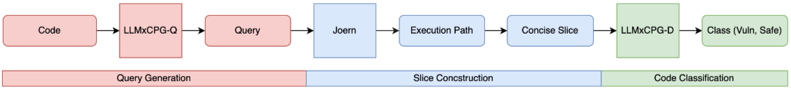

[Research] “LLMxCPG: Context-Aware Vulnerability Detection Through Code Property Graph-Guided Large Language Models” Paper Review (EN)
Introduction
Hello, I’m L0ch! Recently, I’ve become interested in Code Property Graphs (CPG) and have been looking into them. In this post, I’ll be reviewing the USENIX Security ‘25 paper, “LLMxCPG: Context-Aware Vulnerability Detection Through Code Property Graph-Guided Large Language Models.”
Original Paper: https://arxiv.org/pdf/2507.16585
Background
As is the case in many fields, LLMs are being widely used in vulnerability detection these days. I also use LLMs frequently when analyzing 1-day vulnerabilities or searching for zero-days.
However, I’ve often experienced issues where analysis fails on large codebases, or the context size is exceeded, requiring manual intervention. Of course, modern large-scale models like Gemini and GPT have significantly larger context windows than before, but smaller embedding models for fine-tuning or training are still limited by their context window size because supporting hardware performance can be a challenge (~~underpowered GPUs~~).
A problem with existing LLM-based vulnerability detection approaches is that the code relevant to the actual vulnerability often makes up only a small portion of the entire code segment being analyzed by the LLM. In other words, irrelevant code constitutes the majority of the segment. This leads to several problems, such as increased token usage and the model relying on irrelevant code patterns.
The paper I’m reviewing today introduces a CPG-based code slicing technique to address these issues and overcome the limitations of LLMs in analyzing large codebases.
Code Property Graphs (CPG): A method that combines various code representations, such as the Abstract Syntax Tree (AST), Control Flow Graph (CFG), and Program Dependence Graph (PDG), into a single graph.
Methodology
0. System Overview
The figure below provides an overview of the system proposed in the paper, which uses the code representation provided by CPG to slice and reduce the code related to a vulnerability to determine its existence.

It consists of three main stages: Query Generation, Slice Construction, and Code Classification.
1. Query Generation

The LLMxCPG-Q model is a fine-tuned version of Qwen2.5-Coder-32B Instruct, as shown in the figure. It takes the code to be analyzed as input and generates the CPGQL queries that will be described later. This trained model is used to automate query generation for extracting key code segments related to vulnerabilities and for the overall code slicing process.
2. Slice Construction
The CPGQL query generated in step 1 is processed by Joern. Joern is an open-source SAST tool that generates CPGs and supports querying them with the Scala-based CPGQL.
Based on Joern and the CPGQL queries, a code slice is constructed through the following three steps:
- Identify the potential root cause of the vulnerability in the code, focusing on the execution path.
- Identify variables that interact with the execution path.
- Find all code elements that affect steps 1 and 2 to construct the final slice.
2-1) Extracting the Taint Path
The example vulnerability used is CVE-2011-3359.
- A buffer overflow vulnerability caused by insufficient validation of the buffer length
len. - The overflow is triggered during the copy process of length
lenwhen theskb_putfunction is called.
val source = cpg.identifier.name("len")
val sink = cpg.call.name("skb_put").where(_.argument.order(2).codeExact("len + ring->frameoffset"))
val execution_paths = sink.reachableByFlows(source)The CPGQL query above extracts the vulnerability’s Taint Path, including the source (variable len), sink (skb_put call), and execution paths.
2-2) Extracting Variables Interacting with the Execution Path
val execution_path_nodes = <Query to extract execution path (generated by LLMxCPG-Q)>
cpg.identifier.filter(id => execution_path_nodes.lineNumber.toSet.intersect(id.lineNumber.l.toSet).size.equals(1))It searches for nodes that interact with execution_path_nodes using a CPGQL query.
2-3) Backward Slicing and Final Code Snippet Construction
# Query to extract execution paths and interactions
execution_path_and_interacters.reachableByFlows(cpg.all)In this stage, a backward slice is constructed using Joern’s reachableByFlows API, which internally uses a Program Dependency Graph (PDG).
The backward slice retrieves all contexts related to the vulnerability’s interactions and execution path, such as loops, variable declarations, and initializations.
static void dma_rx(struct b43_dmaring *ring, int *slot)
{
u16 len;
len = le16_to_cpu(rxhdr->frame_len);
if (unlikely(len > ring->rx_buffersize)) {
s32 tmp = len;
while (1) {
tmp -= ring->rx_buffersize;
if (tmp <= 0)
break;
}
goto drop;
}
skb_put(skb, len + ring->frameoffset);
drop:
return;
}As a result of slicing, the original 85-line dma_rx() function was compressed into an 18-line code snippet that is semantically consistent with the execution path of the CVE-2011-3359 vulnerability.
3. Code Classification (Vulnerability Detection)

The code, compressed through slicing, is then binary classified as either Vuln or Safe by the LLMxCPG-D model, which is a fine-tuned version of the QwQ-32B-Preview model. LLMxCPG-D is fine-tuned on a dataset of sliced and labeled code snippets from both vulnerable and non-vulnerable code to improve classification accuracy.
This approach is not only useful for vulnerability detection but can also identify and highlight vulnerability patch code in patched versions. This can be utilized to automate the creation of datasets for future model training.
Performance Analysis
The implemented system was evaluated on six main points. The results for each are as follows (for detailed figures and comparison tables, please refer to the original paper).
Query Generation
- Successfully learned CPGQL by generating valid queries for all 1278 test samples.
- A human audit of 50 samples showed that in 76% of them, the sliced code was semantically consistent with the intended vulnerability.
- Analysis of 25 misclassified samples:
- 28% were semantically correct queries but were misclassified by LLMxCPG-D.
- 40% resulted from incorrect CWE derivation.
- 32% correctly identified the CWE but failed to retrieve key context elements.
Code Reduction
- Achieved code reduction rates ranging from a minimum of 67.87% to a maximum of 90.93% across various datasets.
Function-level Vulnerability Detection
Demonstrated high performance, especially in function-level vulnerability detection.
Showed high detection rates for specific memory corruption bug types (CWE-119, CWE-415, CWE-416, CWE-190).

Generalizability
- At the function level, generalizability improved accuracy by 20% compared to existing models like VulSim, VulBERTA-CNN, VulBERTA-MLP, and ReGVD.
- At the project level, it maintained consistent performance without degradation despite increased complexity.
- The model also showed respectable generalization performance on new vulnerability patterns appearing after its knowledge cutoff, confirming that it learned the fundamental characteristics of vulnerabilities, not just known CVEs.
Misclassification Analysis
- Performance degradation was observed for CWE-120 (Classic Buffer Overflow) and CWE-125 (Out-of-bounds Read).
- This was attributed to a limited number of samples for these CWEs in the training dataset and can be resolved with a higher-quality dataset.
Robustness to Code Augmentation
- Showed high performance in preserving semantics against noise (comment impact, dataset dependency, code transformation noise).
- However, the T3 transformation (function extraction) significantly impacted the model’s performance, particularly its recall, indicating the model is somewhat sensitive to T3 transformations.
- Function extraction involves transformations like splitting a function’s code into a new function or merging the code of multiple functions into one.
- When such transformations occur, the very structure of function calls, data flow, or relationships with other functions within the CPG is reorganized, which is why it impacts the model’s performance more significantly than other transformations.
Conclusion
In summary, LLMxCPG optimizes the code context by filtering out unnecessary code through CPG-based code slicing. This optimization enhances the learning efficiency of the LLM and helps overcome the limitations of existing models. Notably, it maintains semantic consistency even with code transformations and significantly improves generalization performance on complex codebases.
Closing Thoughts
As the authors mention in the Limitations section, it is difficult to cleanly resolve the dependency on computing power when the query model (LLMxCPG-Q) preprocesses large codebases. Furthermore, it inherits the inherent limitations of CPGs, such as the difficulty in detecting vulnerabilities like race conditions or business logic errors, which are tied to runtime properties. Thus, its limitations are clear.
Nevertheless, the idea and implementation of generating and compressing a semantically equivalent execution path directly related to the vulnerability from the original code for analysis using CPGs was fascinating. While the reasoning capabilities and context size of LLMs are constantly improving, rather than just waiting for model performance to get better, advancing optimization research like this could accelerate faster and more accurate automated vulnerability detection.
I didn’t cover the implementation details, but I might return with a Part 2 review after trying out the publicly available source code and models. Those who are interested might want to check them out first.
I’ll be back with more interesting paper reviews in the future!